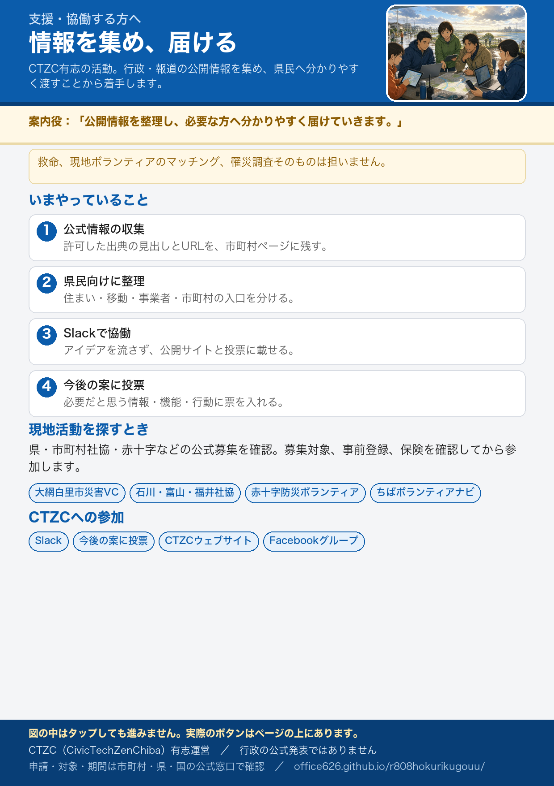

支援・協働する方へ
豪雨被害から一刻も早い復旧を支援する活動。まずは行政・報道の公開情報を集め、県民の皆様へ情報を届ける活動から着手します。今後新たな支援策も検討し実行していきます。
千葉県内の災害支援ボランティア情報
現地へ向かう前に、必ず各機関の最新情報を確認してください。 災害ボランティアセンターが開設されていても、募集前・受付休止中の場合や、募集対象を市内・県内在住者に限る場合があります。事前登録、活動日、持ち物、ボランティア活動保険の条件を確認し、予約なしで現地へ行かないでください。
今回の豪雨で開設を確認できた窓口
-
大網白里市災害ボランティアセンター
市公式
社会福祉協議会
大網白里市社会福祉協議会が開設。家屋の片付けや家財の搬出などを支援します。市公式の案内では開設時間は午前9時から午後4時です。参加方法と当日の募集状況は、出発前に公式情報で確認してください。
大網白里市：災害ボランティアセンターの開設について ／ 大網白里市社会福祉協議会：ボランティア
募集・登録・最新情報を確認できる機関
-
千葉県社会福祉協議会
社会福祉協議会
今回の豪雨に伴う各市町村の災害ボランティアセンター設置状況を確認する県域の窓口です。 -
日本赤十字社千葉県支部「赤十字防災ボランティア」
登録・研修
平時から登録し、研修・訓練を受けて、災害時の情報収集、応急手当、物資輸送、避難所支援、災害ボランティアセンター運営補助などに参加します。 -
ちばボランティアナビ
県のマッチングサイト
「災害救援」を含むテーマや地域、募集対象から、県内の公開中の募集情報を検索できます。 -
千葉県「災害ボランティア情報」
県公式
県内の関係機関、全国社会福祉協議会、災害支援団体などの情報への入口です。 -
全社協 被災地支援・災害ボランティア情報
全国情報
災害ボランティアセンターの設置・募集状況や、活動前の準備、ボランティア活動保険を確認できます。
被災後にあるとよいこと（投票）
罹災証明の案内の出し方、制度カレンダー、写真の残し方など、情報・機能・行動の案を並べています。必要だと思うものに投票してください。結果は今後の機能追加や新しいサービスの参考にします。
CivicTechZenChiba
やること（初版）
- 許可リストの URL が開けるか確認する
- 市町村と公式サイトの紐づけの誤りを指摘する
- 市町村公式のお知らせを1行足す：
data/supports.csvに「slug, 種類（risai/waste/disinfect/water/housing/vc/support/hub）, 見出し, URL, 受付状態, 確認日」を足す（git が使えない人は Issue に同じ内容を書く）。一般の方からは市町村ページの「報告フォーム」で届く。まだ個別ページが少ない市町村は、市町村一覧で確認してください - 要件の Issue / Pull Request
利用者からの「違う・古い」の報告に対応する
各ページの下と、市町村公式リンクの横に「報告」があります。報告は運用スプレッドシートの「訂正」シート（Google フォームの回答）に届きます。フォーム未設定のあいだは GitHub Issue に届きます。報告の内容は公開しません。
- 「訂正」シートか Issue を見て、状態を「確認中」にする。該当が市町村公式リンクなら
data/supports.csvのstatusをcheckingに（サイトに「確認中」バッジが出る） - 公式ページで裏取りする。市町村・県・国の公式以外を根拠にしない
- 直す：
supports.csv（URL・見出し・受付状態・確認日）か該当ページ。日本語ページを直したら英語版も同じ変更をし、python scripts/check_bilingual.pyを通す - 状態を「対応済み」（対応しない判断なら「対応不要」と理由）にする。連絡先がある報告には一言返す
- 週に一度、未対応の報告を棚卸しする
